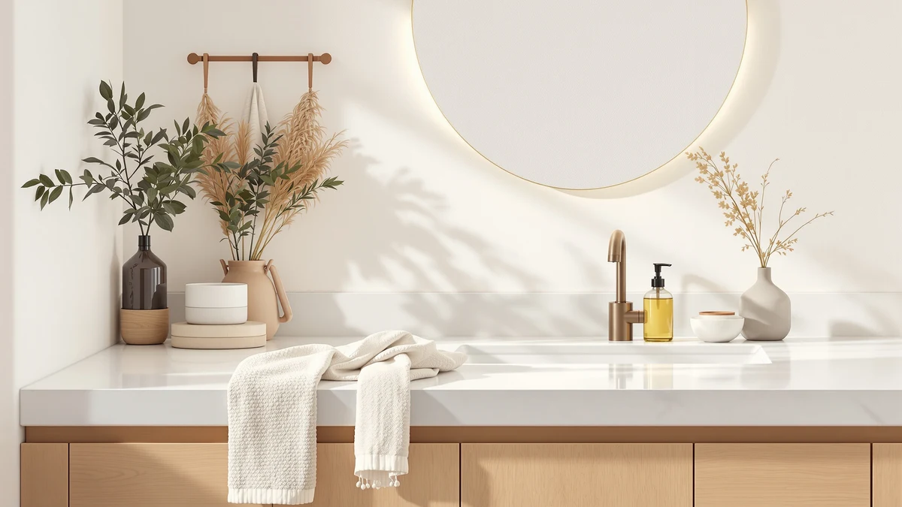

Best How to Install Soap Dispenser on Sink (2026)
Prices and picks verified as of August 2026. Independent, reader-supported reviews.


Things to Know Before You Buy
- You need an existing hole for a built-in unit. Most kitchen sinks ship with a spare 1 3/8-inch opening under a chrome cover. Drilling stainless steel or granite turns this into a different project, so check before you buy.
- Measure deck thickness before you install a soap dispenser on a sink. Countertop plus sink flange must stay under the shank's rated depth, which is 2.17 inches on the GAGALIFE unit we recommend below.
- Bottle size sets your refill schedule. A 17-ounce bottle covers a family of four for roughly a month of dishwashing, while small 8-ounce bottles need topping up weekly.
- Countertop units skip the install. If your sink has no spare hole, a touchless model like the PZOTRUF delivers soap beside the faucet with zero mounting work.
You can learn how to install soap dispenser on sink counters in about 30 minutes, and the job asks for nothing beyond an adjustable wrench and a flashlight. In most kitchens you will not even drill, and you certainly do not need a plumber. A built-in dispenser mounts through a spare hole in your sink deck or countertop, with the pump head above and a refillable bottle hanging below. Once the gasket seats and the nut tightens, you get a clear counter and one less plastic bottle sliding around the basin.
This guide walks through the five steps in order: checking the mounting hole, removing the old unit or cover, seating the new pump, tightening the nut, and priming the pump. We also cover the mistakes that cause leaks and wobbly spouts, plus three dispensers we recommend if you have not bought one yet. Budget around $20 for a solid built-in model and set aside half an hour on a weekend morning.
What You'll Need
- Supplies: Liquid hand soap or dish soap, rubber mounting gasket (included with most dispensers), silicone sealant (optional, for textured counters)
- Tools: Adjustable wrench, flashlight. These two handle the whole soap dispenser installation on a standard sink.
Step 1: Check the mounting hole and clear the cabinet
Point a flashlight under your sink and find the spare hole. Most stainless steel kitchen sinks ship with an extra 1 3/8-inch opening on the deck, capped with a chrome or plastic cover. Granite and quartz counters sometimes have the hole pre-drilled next to the faucet instead. Measure the opening with a tape measure; standard dispensers like the GAGALIFE need a hole between 1 and 1.5 inches across.
Measure the deck thickness too. Add the countertop and the sink flange together, since the dispenser shank has to reach through both before the nut can bite. Most shanks handle up to about 2.2 inches, and thick quartz over an undermount flange can exceed that, so check the spec on the box before you commit.
Empty the cabinet below while you are down there. You will spend the next 20 minutes reaching up behind the basin, and a cabinet full of cleaning supplies makes that part slower and messier than the sink soap dispenser installation itself.
Step 2: Remove the old dispenser or hole cover
Reach under the sink and find the plastic mounting nut on the old dispenser, or the retaining clip on the hole cover. If a dispenser already occupies the hole, unscrew its soap bottle first, then spin the mounting nut counterclockwise. Hand pressure breaks most nuts loose; grab the adjustable wrench for a stubborn one, and hold the pump head steady from above with your other hand so it does not spin along with the nut.
Chrome hole covers usually pop off with thumb pressure from below, or a gentle pry with a flathead screwdriver wrapped in a cloth to protect the deck. Lift the old hardware out through the top and wipe the area around the opening with a damp microfiber cloth. Soap scum and mineral crust build up under old flanges, and a clean, flat deck is what keeps the new gasket from leaking after you install the soap dispenser on the sink.
Step 3: Seat the pump head and gasket
The gasket does the sealing work when you mount a soap dispenser on a sink, so slide it onto the dispenser shank until it sits flat against the underside of the flange. Skip the temptation to leave it off or stack two together. If your deck has texture or a slight slope, run a thin bead of silicone sealant around the hole instead of relying on the gasket alone, and wipe away the squeeze-out as soon as the flange seats.
Drop the shank through the hole from above and turn the spout so it points over the basin, not over the counter. Pump spouts drip a little in daily use, and a spout aimed at the counter leaves a soap puddle behind the faucet within a week. Hold the head in position with one hand while you move to the next step, because the shank spins freely until the nut bites.
Step 4: Tighten the mounting nut and attach the bottle
Thread the plastic mounting nut onto the shank from below and spin it up until it contacts the underside of the deck. Tighten it hand-tight, then add a quarter turn with the adjustable wrench. More soap dispenser installs on a sink fail at this step than anywhere else: plastic nuts crack under full wrench torque, and a cracked nut means a wobbly dispenser and a return trip under the cabinet. Stop when the head sits firm and the gasket compresses evenly.
Check your work from above before attaching the bottle. Press the pump head sideways; it should not rock or rotate. Then screw the soap bottle onto the bottom of the shank until snug. On models like the GAGALIFE, the 17-ounce bottle threads straight onto the shank collar, and cross-threading it is the most common assembly mistake, so start the threads by hand and back off the moment you feel resistance.
Step 5: Fill the bottle and prime the pump
Unscrew the bottle one more time, fill it about 80 percent full with liquid hand soap or dish soap, and thread it back on. The headspace stops soap from surging up the tube when you screw the bottle home. Thick, moisturizing formulas pump harder than thin ones; if you prefer a thick soap, cut it with a tablespoon of water and shake the bottle before filling.
Press the pump 8 to 12 full strokes. The first few pull air, then soap climbs the dip tube and the pump starts dispensing on each press. Run a strip of dry paper towel around the underside of the flange and along the nut, wait an hour, and check it again. A dry towel confirms the seal; a damp spot means the nut needs another eighth of a turn. Once the towel comes back dry, the soap dispenser on your sink is ready for daily use and you can put the cleaning supplies back in the cabinet.
Common Mistakes to Avoid
Overtightening the mounting nut ruins more installs than any other error. The nut is plastic on most dispensers, and wrench torque past a quarter turn beyond hand-tight cracks the collar or crushes the gasket until it seals unevenly. Tighten until the head stops rocking, test with the paper towel trick from Step 5, and add small increments only if you find a damp spot.
Skipping the deck measurement comes next. Buyers order a dispenser, unbox it, and discover the shank stops half an inch short of clearing a thick quartz counter with an undermount flange. Measure the full stack before you buy, and compare it against the maximum deck thickness printed on the listing; the GAGALIFE, for example, tops out at 2.17 inches.
Smaller errors round out the list. Aim the spout at the counter and you will find a soap puddle behind the faucet within a day. Fill the bottle to the brim and soap surges up the tube and drips from the spout. Force a cross-threaded bottle and it holds for a week, then drops into the cabinet mid-pump. Slow down on the final two steps of the sink soap dispenser installation. The early steps forgive a sloppy hand; these last two are where the mess starts.
Our Top Picks
If you are still choosing hardware before you install a soap dispenser on your sink, these three cover the common situations: a sink with a standard spare hole, a sink with no hole at all, and the shower wall. Prices come from Amazon as of July 2026.

Editor's Pick
PZOTRUF Automatic Soap Dispenser Touchless
The no-install option. Its infrared sensor reads your hand within 2.4 inches and five dispensing levels handle thin and thick soaps. If your sink lacks a spare hole, the 17-ounce tank sits beside any faucet and skips the wrench entirely.
$20.99
Check Price on Amazon
Best Value
GAGALIFE Built in Sink Soap
The straight built-in replacement. The brushed nickel head swivels 360 degrees and the 17-ounce bottle cuts refills to about once a month. It fits standard 1 to 1.5-inch sink holes on decks up to 2.17 inches thick.
$16.99
Check Price on Amazon
Premium Choice
Better Living Aviva Shower Dispenser
For the shower rather than the sink deck. Three 11-ounce chambers hold soap, shampoo, and conditioner behind push-button pumps, and it mounts to tile without drilling.
$58.49
Check Price on AmazonFrequently Asked Questions
Do I need to drill a hole to install a soap dispenser on a sink?
Most kitchen sinks include a spare 1 3/8-inch hole capped with a chrome cover, so you rarely need to drill. Pop the cover off and the dispenser drops straight in. If your sink and counter have no spare hole, a countertop touchless unit like the PZOTRUF gives you dispenser convenience without cutting stone or steel.
How long does it take to install a soap dispenser on a sink?
Plan on 30 minutes for a first install, including clearing the cabinet and testing for leaks. A straight swap of an old pump for a new one takes closer to 15 minutes, since the hole and the routine stay the same.
Why does my sink soap dispenser leak underneath?
A leak under the deck usually means a misaligned gasket or an overtightened nut that crushed it. Unscrew the bottle, back the nut off, reseat the gasket flat against the deck, and retighten to hand-tight plus a quarter turn. A thin bead of silicone sealant around the hole fixes leaks on textured or uneven counters.
What soap works best in a built-in sink dispenser?
Standard liquid hand soap and dish soap pump well. Thick moisturizing formulas and cheap gel soaps strain the pump and can clog the spout; dilute them with about one part water to four parts soap and shake before filling. Skip foaming soap unless your dispenser has a foaming pump, because the two mechanisms take different soap consistencies.
How do I refill a built-in soap dispenser without going under the sink?
Most built-in dispensers, including the GAGALIFE, refill from the top. Twist off the pump head, pour soap straight into the shank opening with a small funnel, and screw the head back on. You only need to go under the sink if the bottle unthreads from the shank or if you spot a leak.
Verdict
Once you know how to install soap dispenser on sink decks, the job comes down to five checks: a hole between 1 and 1.5 inches, a deck under the shank's rated thickness, a flat gasket, a nut at hand-tight plus a quarter turn, and a primed pump with a dry paper towel underneath an hour later. Budget 30 minutes and about $20 in hardware, and treat the leak check as part of the job rather than an afterthought. For sinks with a standard spare hole, the GAGALIFE built-in unit at $16.99 drops in with the exact steps above and refills from the top. If your sink lacks a hole, skip the drill and set the PZOTRUF touchless dispenser next to the faucet; you get hands-free soap in the time it takes to unbox it. Either way, wipe the deck clean before you seat the gasket. A flat, residue-free surface prevents the one problem that sends people back under the sink.